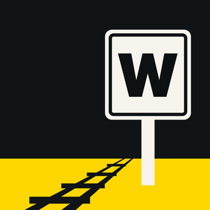

Which railroad is this, and what milepost?
Stand next to any track in the United States, or tap it on the map. Whistlepost answers with the railroad, the subdivision and the milepost, and puts the nearest crossing one tap away.
Get Whistlepost on the App Store
351.6
At the crossing
Every public and private crossing in the federal inventory is in the app: its DOT number, the railroad's emergency line, trains a day, timetable speed, warning devices and quiet zone status.
Gates stuck or a vehicle on the tracks? The red button calls the railroad's emergency line for that crossing and shows the number they will ask for.
Along the line
Open a subdivision to see it end to end: every crossing in milepost order. Search by the number on the blue sign, by street or by city. Save the places you want to come back to, with your own notes.
Works where the signal does not
Track, crossings and mileposts are stored in the app. Only the background map needs a connection.
Where the data comes from
The Federal Railroad Administration publishes the crossing inventory and the North American Rail Network. Whistlepost reads both. Mileposts between crossings are estimates worked out from the inventory, and records can be out of date: a railroad's own timetable always wins.
Be safe
Tracks, yards and bridges are private property. Watch trains from public places.
Help
Questions, a wrong record, an idea: baltajmn@gmail.com. I answer every message.